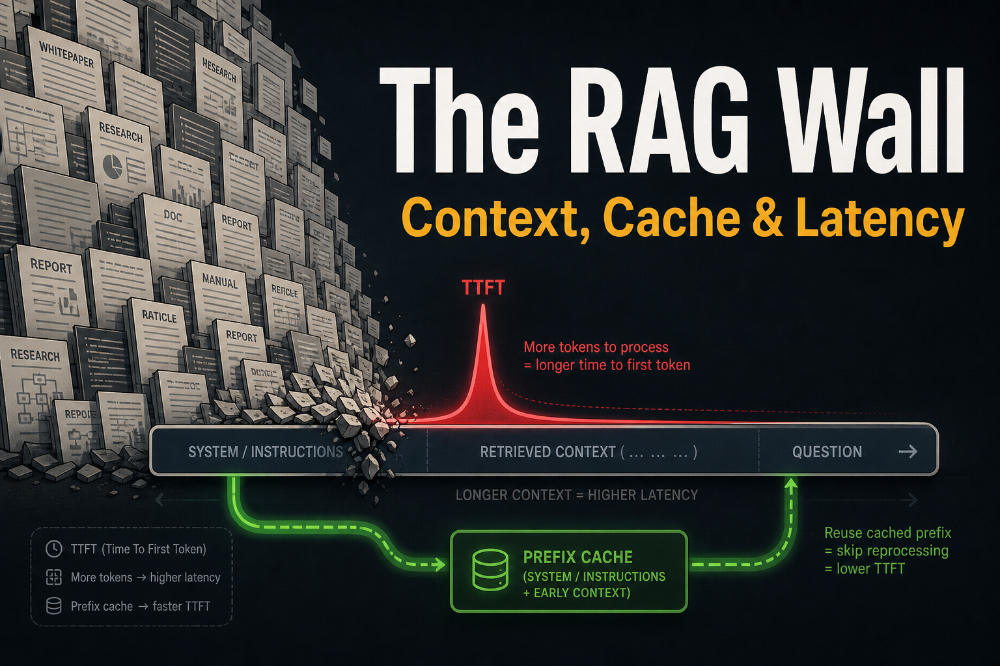
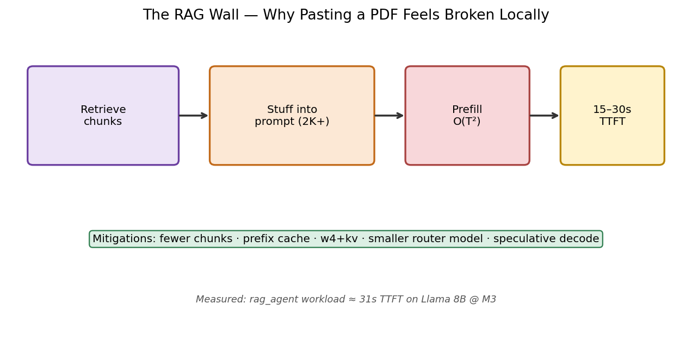
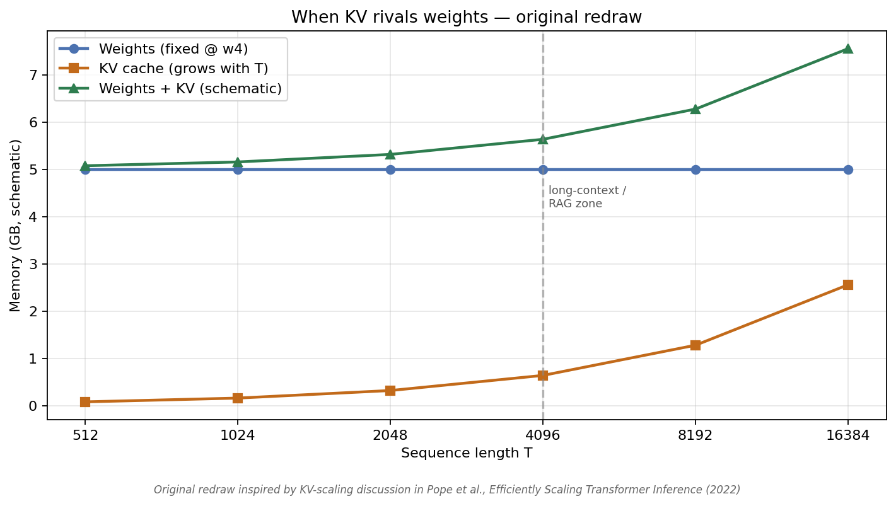
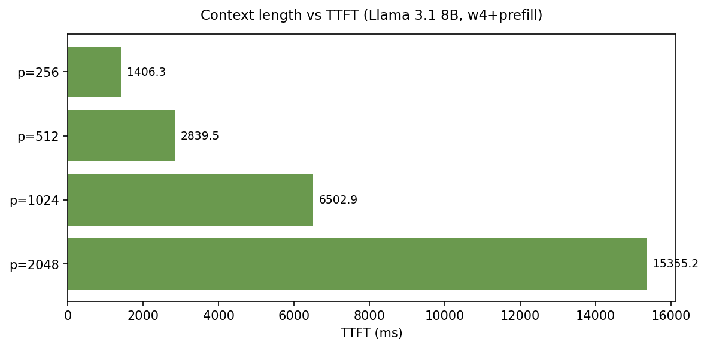
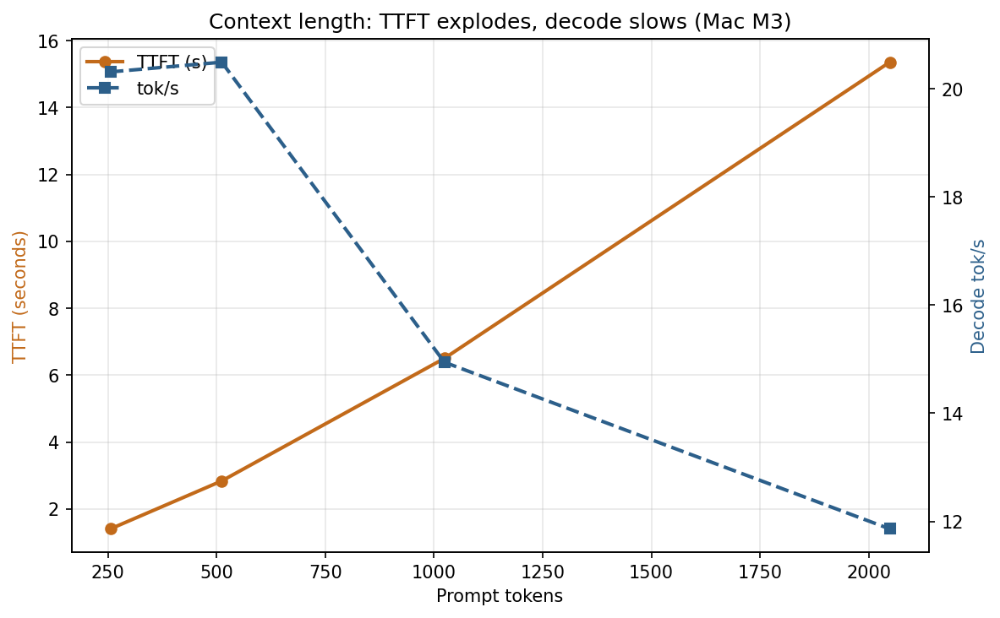
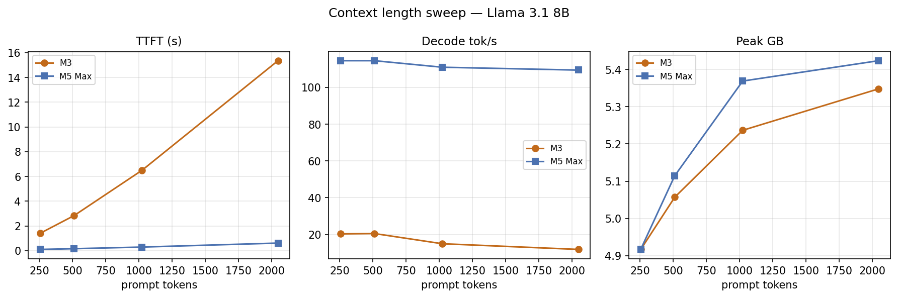
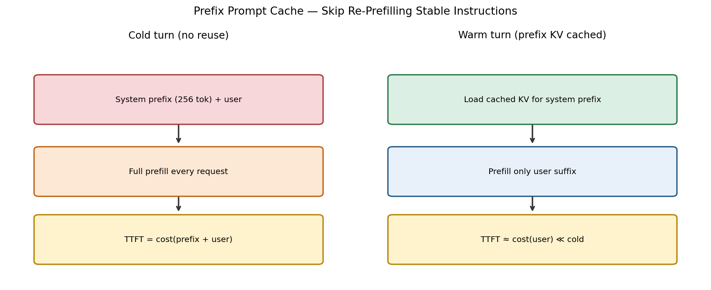
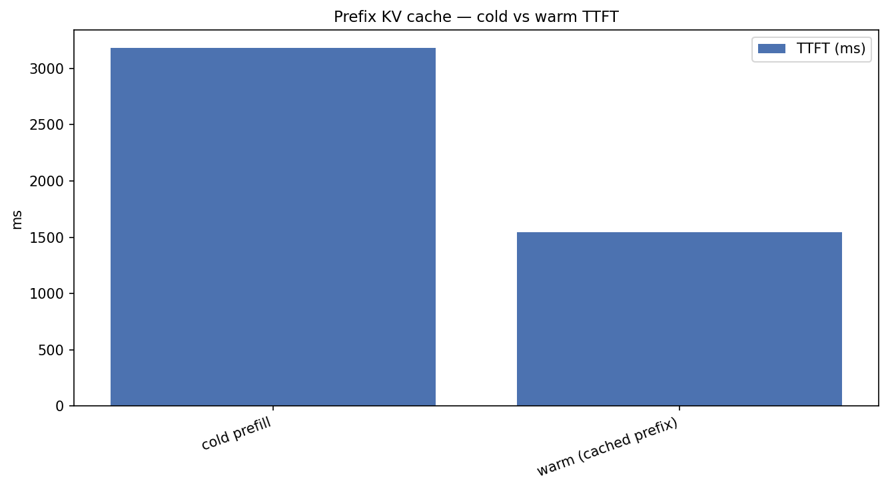
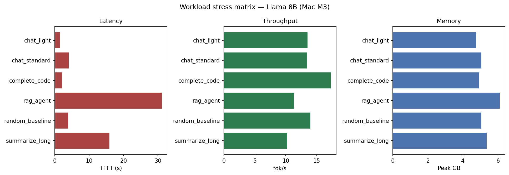
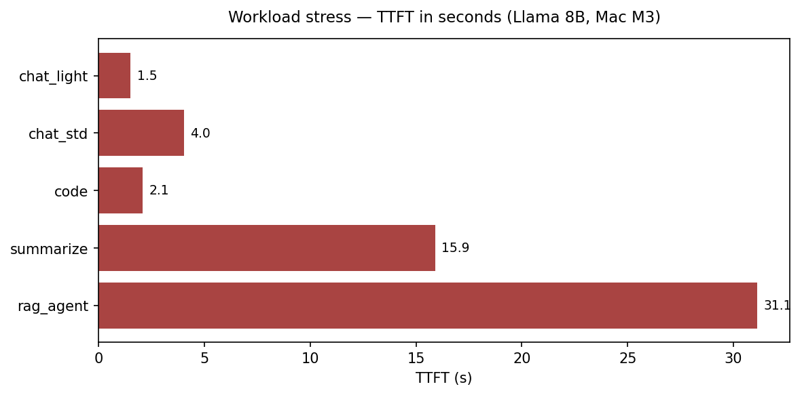

Local LLMs on Apple Silicon — Bonus
The RAG Wall: Context, Cache, and Why Your Demo Freezes
Quadratic TTFT, prefix caching, and workload stress on Apple Silicon
UPLOAD THIS IMAGE IN MEDIUM
../images/thumbnails/thumb_07_rag_context.png
Short prompts hide sins.
Paste a PDF into a local RAG app and three forces collide: quadratic prefill, growing KV, and falling tok/s.
UPLOAD THIS IMAGE IN MEDIUM
../images/workflows/07_rag_wall.png
UPLOAD THIS IMAGE IN MEDIUM
../images/papers/pope_kv_scaling_redraw.png
Context length vs TTFT
- 256 tok → 1.4 s
- 512 → 2.8 s
- 1024 → 6.5 s
- 2048 → 15.4 s
UPLOAD THIS IMAGE IN MEDIUM
../images/07_context_ttft.png
UPLOAD THIS IMAGE IN MEDIUM
../images/07_context_dual_axis.png
UPLOAD THIS IMAGE IN MEDIUM
../images/07_context_m3_m5_panels.png
Prefix cache: cold vs warm
UPLOAD THIS IMAGE IN MEDIUM
../images/workflows/07_prefix_cache_workflow.png
UPLOAD THIS IMAGE IN MEDIUM
../images/07_prefix_cache.png
Workload stress
UPLOAD THIS IMAGE IN MEDIUM
../images/07_workload_panels.png
UPLOAD THIS IMAGE IN MEDIUM
../images/07_workload_ttft.png
If your local RAG demo feels broken, it’s probably prefill — not “tok/s.”
Mitigations that actually work
- Retrieve less (top-3, not top-20)
- Prefix-cache system + tools
- w4 + KV quant
- Small router for easy queries
./scripts/run_article.sh 7 "Mac M3"
← Back to Part 1 · Full series on GitHub